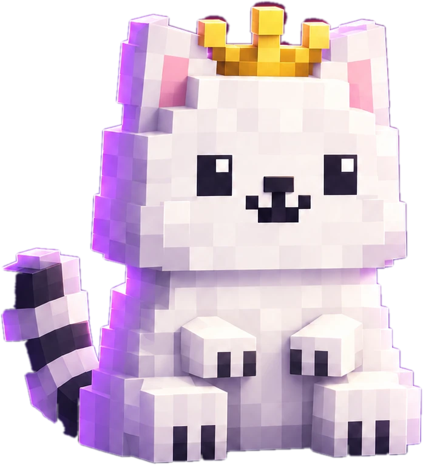

Бета-тест · 0.8.17
Твой мир.
Твой мир.
Твои люди.
Minecraft с магией, технологиями и кланами. Исследуй, строй и создавай свою историю вместе с друзьями.
Скачать лаунчер
Minecraft 1.21.1 · NeoForge
6 кланов · 18 шахт · Врата Разлома
- 1
Установи лаунчер
Скачай файл, запусти установщик и открой AnimeOnCraft.
- 2
Создай персонажа
Зарегистрируй аккаунт в лаунчере и выбери игровой ник.
- 3
Заходи в мир
Нажми «Проверить и восстановить сборку», дождись загрузки и нажми «Играть».
Карта мира
Сора стоит в центре мира, от неё расходятся дороги к шести кланам. Колесо мыши или щипок приближают карту, перетаскивание двигает её.
Новости
Что изменилось на сервере. Те же тексты приходят в лаунчер после каждого обновления.